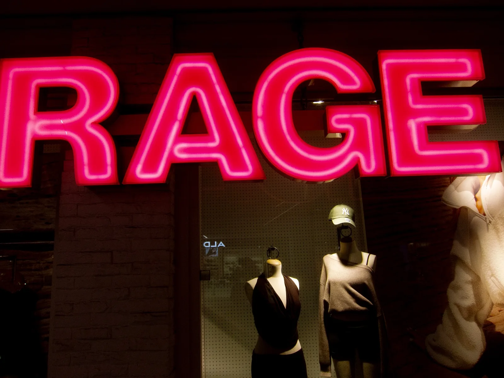
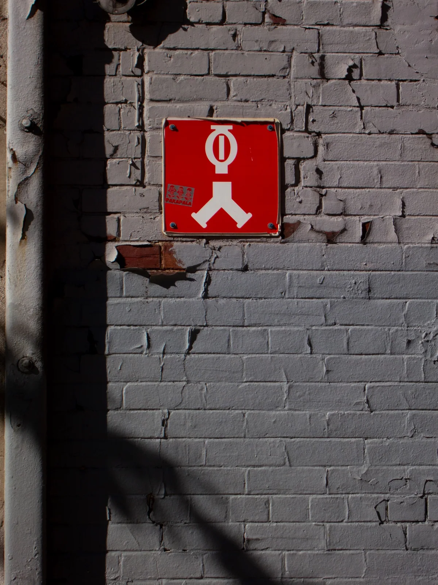
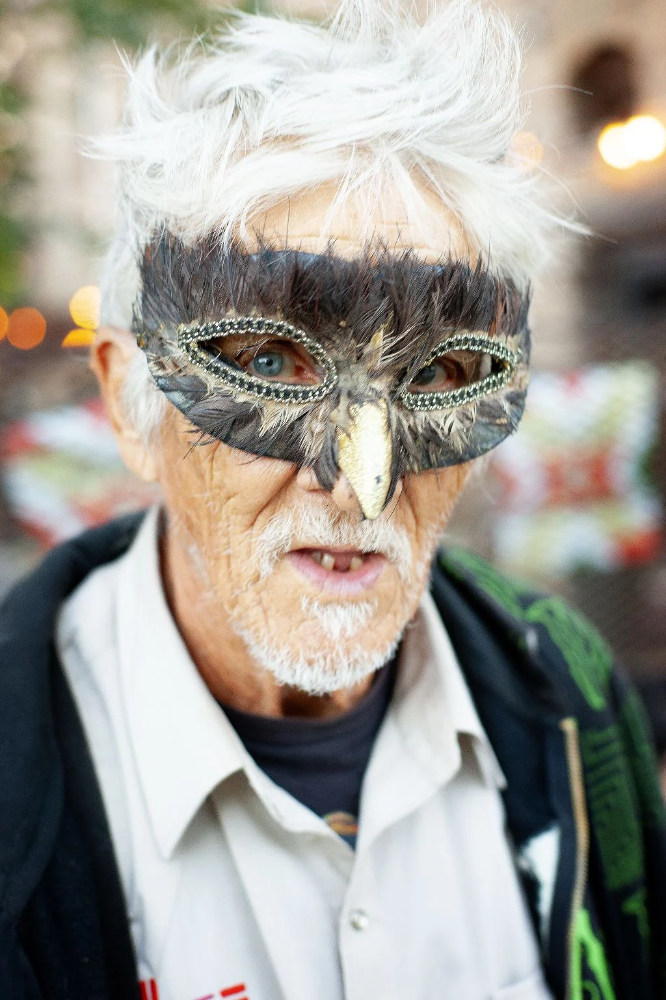
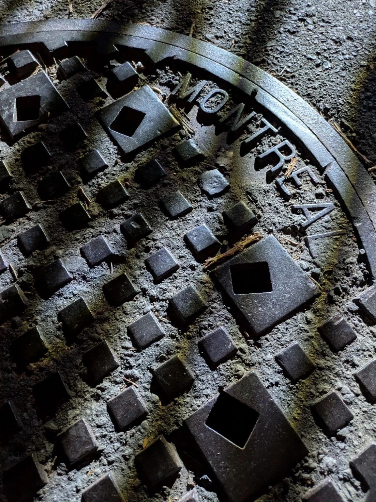
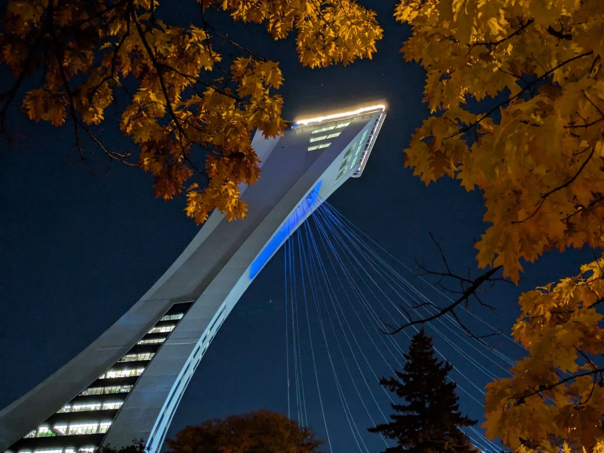
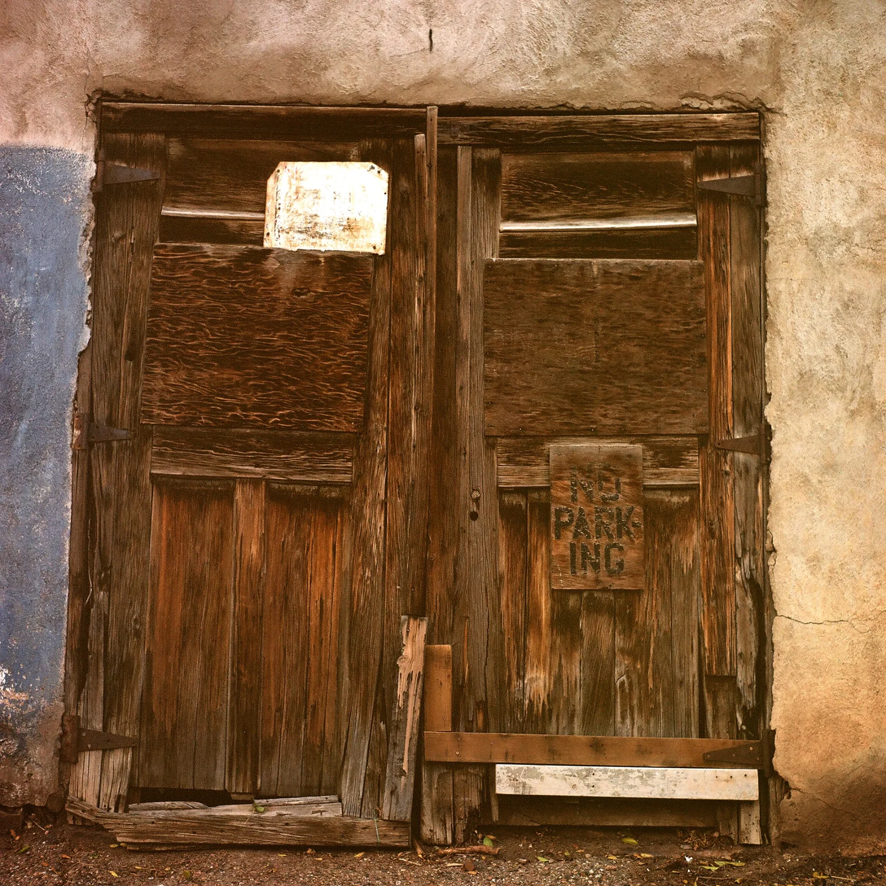
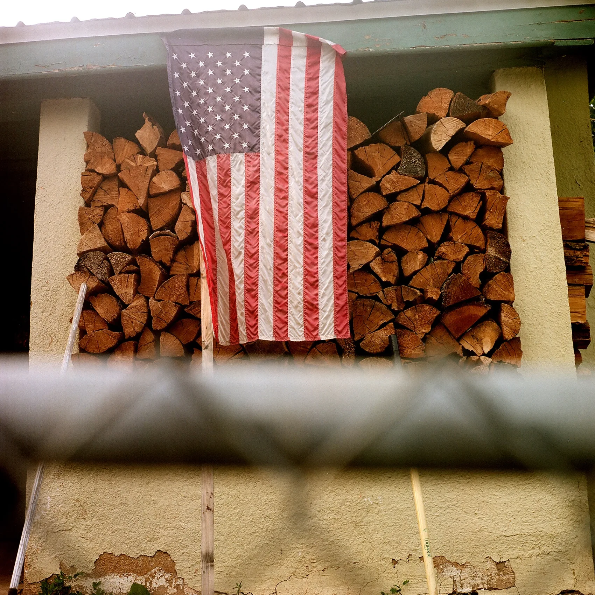
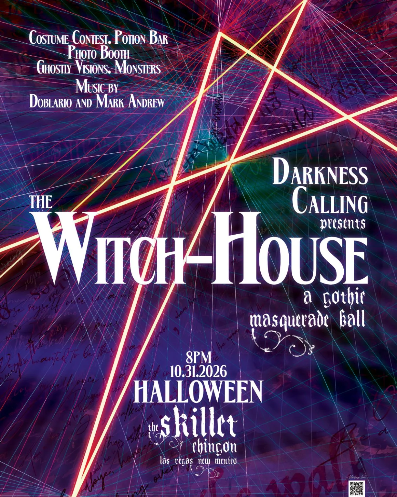
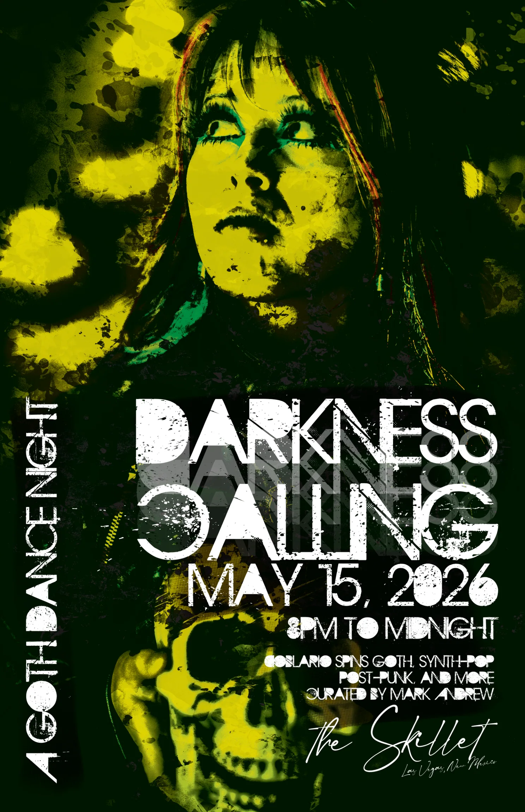
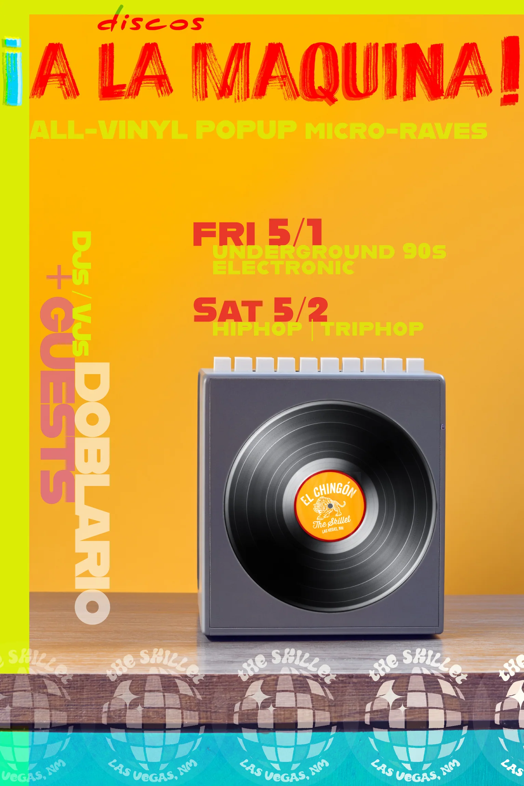

01 / DJ NIGHTS
01 / DJ NIGHTSMARIANO ULIBARRI / SELECTED WORK
Stillunfolding.
This must be the place.
Photography, graphic design, sound, and live visuals. Las Vegas, New Mexico.
SELECTED WORK ↓ doblar.io / image 001PHOTOGRAPHY / 001
doblar.io / image 001PHOTOGRAPHY / 001Selected
work.
Posters, photographs, DJ nights, and other evidence.








PHOTOGRAPHY / SELECTED FRAMES
Eye Know.
MARIANO ULIBARRI / PHOTOGRAPHS



UPCOMING / 2026All tomorrow’s
All tomorrow’s
parties.
FLYERS / DATES / DANCE FLOORS
INDEX / 01—04
The work.
SELECTED AREAS
01 / DJ NIGHTS 02 / PHOTO
02 / PHOTOImage.
03 / TYPE & IMAGEType.

04 / MOVING IMAGETransmission.
EVENTS / SELECTED FLYERS
Flyers.
UPCOMING + PAST / EVENT MATERIAL
Events and gatherings / artwork and design credits vary.



